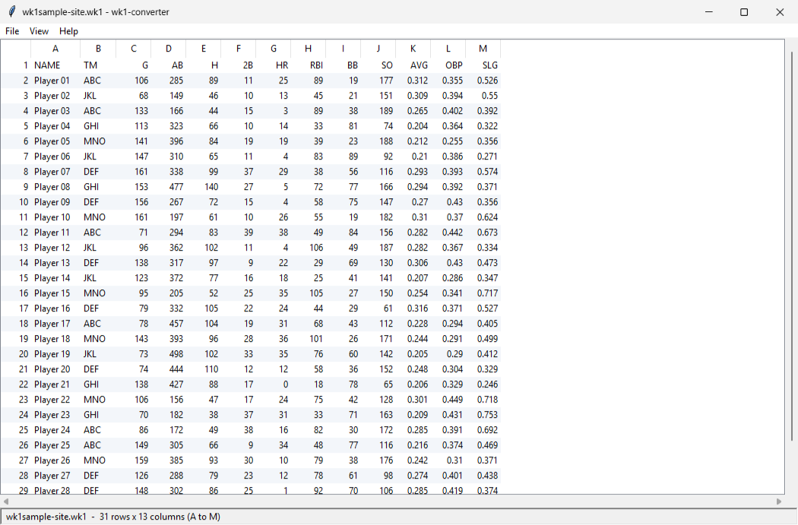

wk1-converter
Open old Lotus 1-2-3 spreadsheets, look through them, then save them as CSV or Excel.
Lotus saved its files as .WK1, which nothing opens any more. This free Windows program reads them, shows the whole sheet in a window you can scroll, and writes a file Excel can open. No Python needed.
What it looks like

How to use it
- Double-click
wk1-converter-gui.exe. If Windows asks, choose More info, then Run anyway: the program is not signed. - Choose File > Open and pick a
.WK1file. It appears in the window, so you can check it first. - Choose File > Save As and pick CSV (opens in Excel) or Excel workbook. Nothing is written until you do.
You can also drop a .WK1 file on the program to open it, select rows and press Ctrl+C to paste them into Excel, or use File > Convert several files to save a whole folder at once.
What it reads, and what it doesn't
- Numbers, text and the last result Lotus stored for each formula cell.
- Formulas themselves are experimental: View > Show formulas decodes the ones where every part is understood, and keeps the stored value for the rest.
- Number formats, dates, colours and column widths are not kept. Text is read as the DOS code page 437 that Lotus used.
Changes
{{changes}}